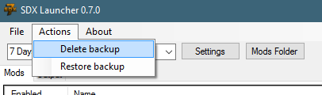

The SDX Launcher's Menu system is very simple.
The File -> Exit closes SDX Launcher.

The SDX Launcher makes a backup when it's first ran. This folder will be under ""
Delete backup - Deletes the backup. A new backup will be done next time SDX Launcher ran.
Restore backup - Takes the backup, and restores over your "Game Directory", which was set in the "Settings Button"
The About opens up the About menu.
Created with the Personal Edition of HelpNDoc: Full-featured EPub generator